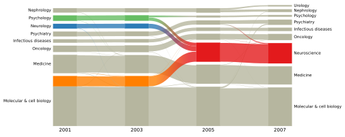
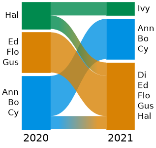

Alluvial diagrams#
alluvial is a Python package for drawing alluvial diagrams
with matplotlib: diagrams of how the modules (communities) of a network change, split and merge across time
steps, layers or methods. Each diagram is made of ordinary matplotlib artists on your own axes, ready for a paper figure
as vector PDF or SVG.


Features#
Native Infomap support. Pass the results of
infomap.run(orinfomap.Infomapobjects that have run), or Infomap’s output files (.tree,.ftree,.stree,.clu,.json), and go from data to a paper figure in a few lines. Sub-modules, state, memory and multilayer networks work too.Any partition. Plain dicts that map nodes to modules, and pandas DataFrames with one row per node, need no Infomap at all.
The mapequation.org layout. The layout is the one of the mapequation.org alluvial web app, so module order, sizes, margins, streamlines and colors match it, and
alluvial.save_diagramwrites files the web app opens for editing by hand.Made for papers. Font sizes in points from
rcParams, labels fitted to the axes, highlighted groups with a legend, custom module names and order, and the web app’s color schemes.
Install#
pip install alluvial
Requires Python >= 3.11 and matplotlib >= 3.7. Results of infomap.run and infomap.Infomap objects work
whenever infomap >= 2.14 is installed; pip install "alluvial[infomap]" is only a shortcut that also installs a
compatible infomap. Files written by any infomap version read without it.
Quick start#
Map each node to its module, one dict per network. Nodes are matched across networks by name, and modules are sized by their number of nodes:
import alluvial
# Who works in which team, two years running.
teams_2020 = {"Ann": 1, "Bo": 1, "Cy": 1, "Di": 1, "Ed": 2, "Flo": 2, "Gus": 2, "Hal": 3, "Ivy": 3}
teams_2021 = {"Ann": 1, "Bo": 1, "Cy": 1, "Di": 2, "Ed": 2, "Flo": 2, "Gus": 2, "Hal": 2, "Ivy": 3}
ax = alluvial.plot([teams_2020, teams_2021], names=["2020", "2021"])
ax.figure.savefig("alluvial.png", dpi=150)

A module can also be a path in a module tree, such as "1:2" (sub-module 2 of module 1).
alluvial.partition() adds flows that weight the nodes, and a DataFrame with the columns network, node,
module and optionally flow is a whole diagram: alluvial.plot(df).
From Infomap#
Pass the Result of infomap.run, or the files Infomap writes (an infomap.Infomap that has run works
too):
import infomap
import alluvial
links_2020 = [(1, 2), (1, 3), (2, 3), (3, 4), (4, 5), (4, 6), (5, 6)]
links_2021 = [(1, 2), (1, 3), (2, 3), (3, 5), (3, 6), (4, 5), (4, 6), (5, 6), (4, 7), (7, 8), (8, 4)]
results = [infomap.run(links, seed=1, two_level=True) for links in (links_2020, links_2021)]
ax = alluvial.plot(results, names=["2020", "2021"])
ax = alluvial.plot(["2020.tree", "2021.tree"]) # or Infomap's output files
Networks go from left to right, and each one can be a path to an Infomap output file (.tree, .ftree,
.stree, .clu or -o json .json), the Result of infomap.run or an infomap.Infomap that has run, an
Infomap JSON dict, a dict of modules, or an alluvial.NetworkFile from alluvial.read() or
alluvial.partition(). The tutorial walks through a complete analysis, and
capabilities covers every feature.